Register a vehicle,
then develop and hand over the product
Which menu do I open, what do I enter, and when do I move on?
Follow vehicle registration and the seven development stages for Seat Cover, Floor Mat, and Car Cover.
How to use this guide
- Read A1–A5 first to learn vehicle, option, and project creation.
- Then choose one product and follow stages 1–7. You do not need to create all three products.
- At each stage, checkInputs → Screen → Completion criteria. Click screenshots to enlarge.
- For stage 5, also read theshared inspection exercise. If stuck, review theimplementation limitsbefore continuing.
Eight terms to know
| Screen term | Plain meaning | Example |
|---|---|---|
| Vehicle | Which vehicle? | 2025 Toyota Camry |
| Option Key / Value | Question / Answer | Front Seat / Bucket |
| Configuration | The vehicle's specific option combination | Hybrid + Bucket + Bench |
| Product Type | The kind of product to make | Seat Cover / Car Cover / Floor Mat |
| Project Group / Zone | Development folder / Target area within it | PG-00124 / F (front seats) |
| Pattern·Design / Revision | Production specification / Its revision | Initial Rev 1 → Updated Rev 2 |
| Sample / Fitting | Trial product / Test on the actual vehicle | Factory sample receipt → Actual installation |
| Handoff | Deliver materials so the next owner can proceed | Final drawings, photos, and manual handoff |
Seven stages by product: key differences
| Step | Seat Cover | Floor Mat | Car Cover |
|---|---|---|---|
| 1 | Research · Verify vehicle and specifications | ||
| 2 | Hunt · Secure actual vehicle | Hunt · Secure actual vehicle | 3D Model · Obtain model |
| 3 | Scan / Measure | Scan / Measure | Fit Review · Review model |
| 4 | Pattern · Link parts | Pattern · Zone molds | Design · Full pattern |
| 5 | Sample · Request → Ship → Receive → Inspect → Required approvals | ||
| 6 | Fitting · Test installation → Revise, resample, and refit if failed | ||
| 7 | Handoff · Deliver materials / Development complete | ||
| Progress unit | Independent zones | Required F+B bundle | Single EX zone |
A check mark indicates recorded progress, not that the screen performed research, production, or inspection. Research Complete and the project's Complete Research action are separate statuses in different places.
Register the vehicle first
A vehicle is the first record identifying the car. This does not yet create a product or Shape.
Follow these steps
- Open Vehicle Research under R&D Tools on the left.
- Click Register vehicle on the right. Enter make, class, model, and model years.
- Submit the dialog and find Toyota RAV4 GUIDE in the list.
Example inputs
- Make / Vehicle class
- Toyota / SUV
- Model
- RAV4 GUIDE — Training name
- Model year from / To
- 2023 / 2026
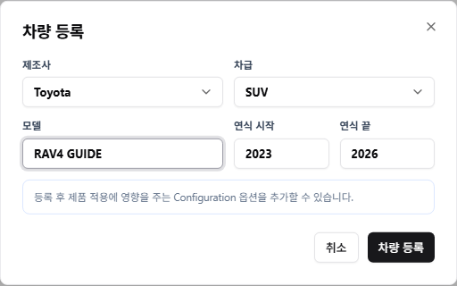
Think of options as questions and answers
An option key is a question (front seat type?); its value is an answer (Bucket). Reuse existing values rather than duplicating them.
Follow these steps
- Check the product type in Vehicle Options first. Seat Cover, Floor Mat, and Car Cover use separate option dictionaries.
- Skip creation if the required keys and values already exist.
- Add only missing keys using Add option key → Enter name → Create.
- Use Add value under that key to enter available choices.
Example inputs
- Real-world example
- Front Seat → Bucket
- Practice key example
- Seat Cover / Guide Seat Feature
- Practice value example
- Guide Standard
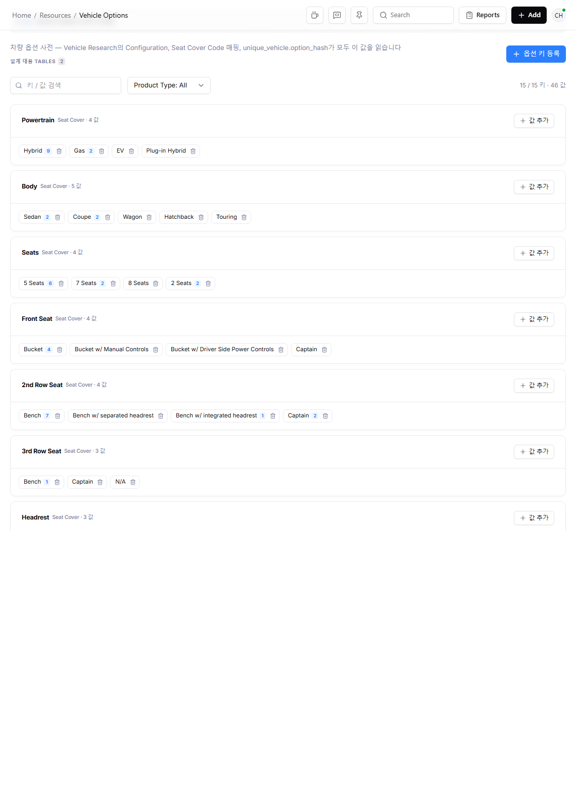
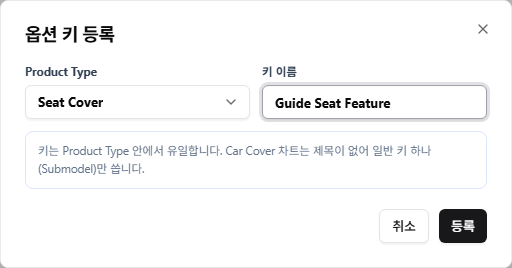
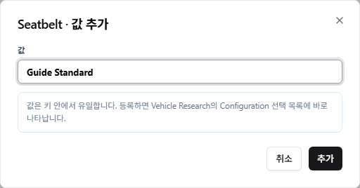
Define the option combination to develop
A configuration means this vehicle with these specifications. The same RAV4 needs separate combinations for different front or rear seats.
Follow these steps
- Click Configuration beside Toyota RAV4 GUIDE.
- Choose the question (criterion) on the left and answer (value) on the right.
- Select Hybrid / Bucket / Bench as shown. Add another criterion if needed.
- Verify actual specifications and register the configuration.
- Read the option chips and distinguish the default 7 Seats / Captain row from the new Bench row.
Example inputs
- Powertrain
- Hybrid
- Front Seat
- Bucket
- 2nd Row Seat
- Bench
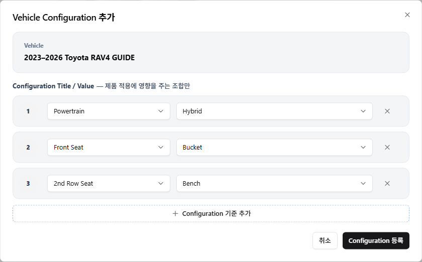
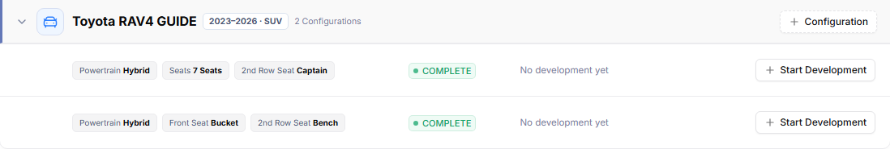
Confirm research completion
Entering a vehicle name and completing enough research to develop it are different.
Follow these steps
- Compare vehicle name, model years, and options against research evidence or the actual vehicle.
- For RESEARCHING rows, click Research Complete after finishing research. Do not repeat this for COMPLETE rows.
- Choose Start Development on the intended row or New Project in Vehicle Projects.
- This exercise uses the newly created Hybrid / Bucket / Bench combination.
Example inputs
- Research target
- Model years / Make / Model / Options affecting the product
- Completion indicator
- COMPLETE
- Project creation target
- Newly registered Bench combination
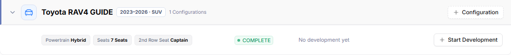
Choose a product type and create a project
A project groups the work of developing a particular product for a particular vehicle configuration.
Follow these steps
- Click New Project, select Seat Cover in Step 1, and continue.
- In Step 2, select Toyota RAV4 GUIDE with Hybrid / Bucket / Bench, then continue.
- In Step 3, check assignee Kai and development zones. This example creates F and B.
- In Step 4, recheck the vehicle, options, product type, and assignee.
- Click Create Project Group and note the actual generated number.
Example inputs
- Product type
- Seat Cover (PT-SC)
- Configuration
- Toyota RAV4 GUIDE / Hybrid / Bucket / Bench
- Assignee
- Kai
- Creation example
- PG-00128 / PG-00128-F / PG-00128-B
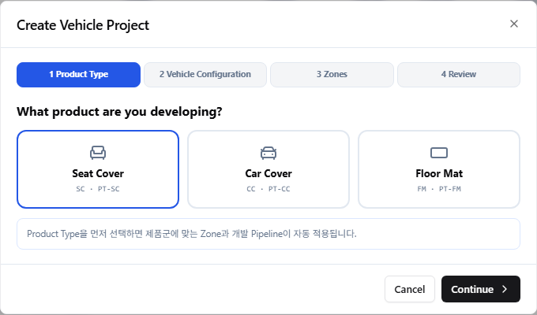
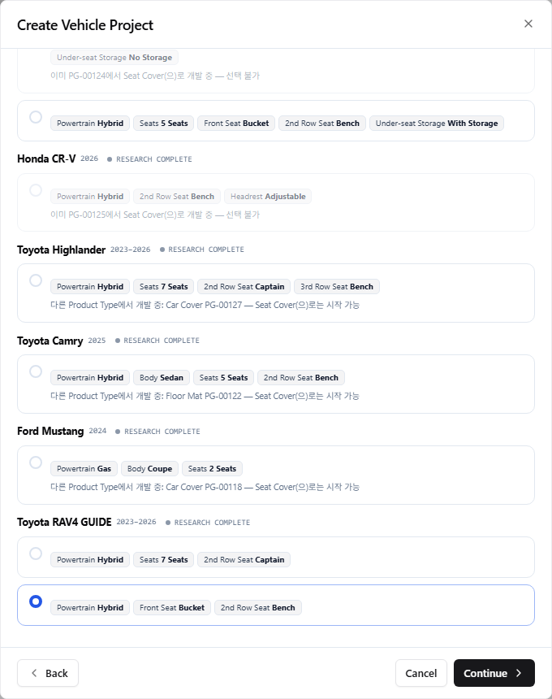
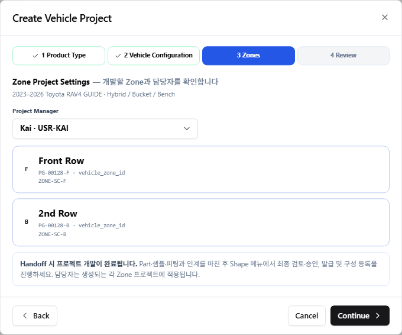
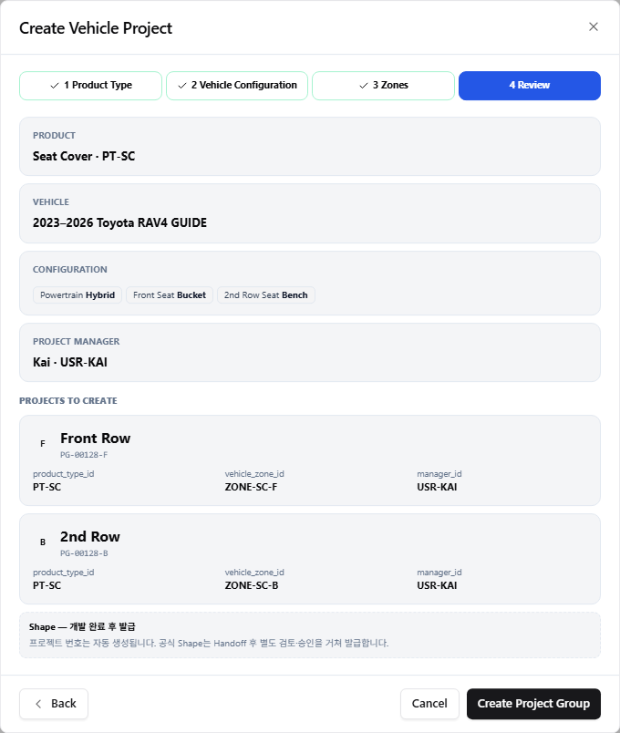
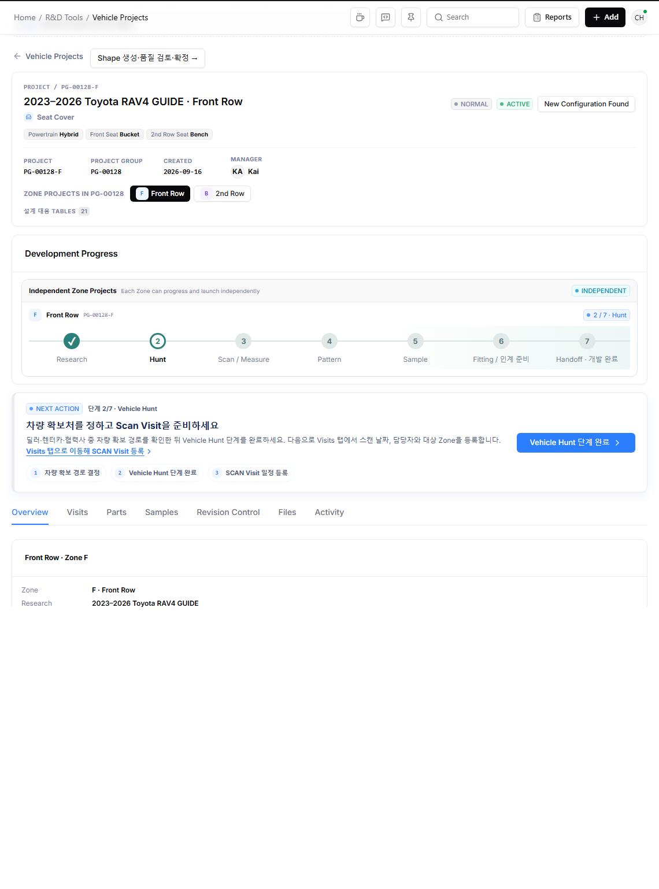
1. Research — Recheck the development target
Recheck the vehicle and options before starting product development.
Follow these steps
- Open the vehicle's F zone in Vehicle Projects.
- Check the vehicle, model years, options, and assignee at the top.
- If Research is current, click Complete Research.
- If already checked, continue to step 2 without entering it again.
Example inputs
- Example vehicle
- 2023–2026 Toyota RAV4
- Product
- Seat Cover
- Working zone
- F
- Assignee
- Kai
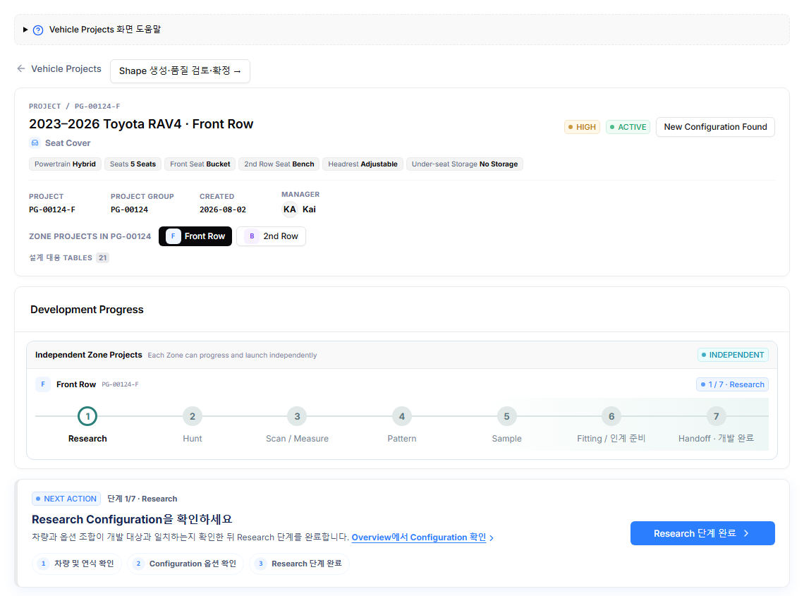
2. Hunt — Secure the vehicle
Secure the actual vehicle and a visit appointment for scanning.
Follow these steps
- Confirm model year and seat/floor specifications with the dealer or partner.
- Check vehicle availability and visits in Hunt Board.
- Return to project Overview and identify the vehicle source.
- Once secured, complete Vehicle Hunt. Schedule the visit in the next Scan stage.
Example inputs
- Vehicle source example
- Galpin Ford — Training location example
- Check
- Model year and options / Availability / Contact
- Planned visit
- 2026-09-18 10:00
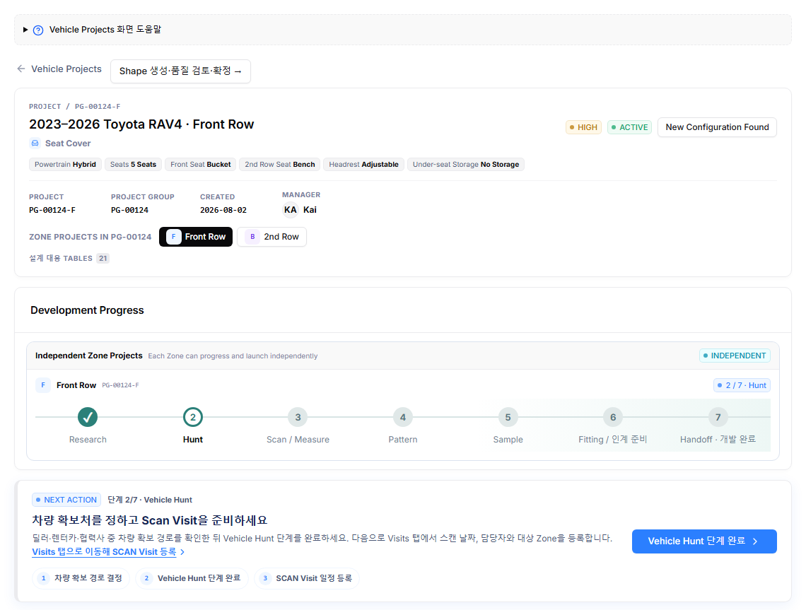

3. Scan / Measure — Measure the vehicle and record results
Capture actual geometry. Scheduling a visit and completing measurements are different.
Follow these steps
- Open Visits → Schedule Visit and choose Scan.
- Choose date, time, location, target zone projects, and visit staff. Select F in this example.
- Save the booking, verify the actual vehicle and options on site, and perform the scan / measurement.
- Record completion with Complete Scan on the visit. Add references to measurement materials in Files.
- Review target zone completion in Overview, then complete Scan.
Example inputs
- Visit Type
- SCAN
- Date / Time
- 2026-09-18 / 10:00
- Target
- F
- Visit Note
- Verify vehicle options and scan the zone. Kai accompanies the visit.
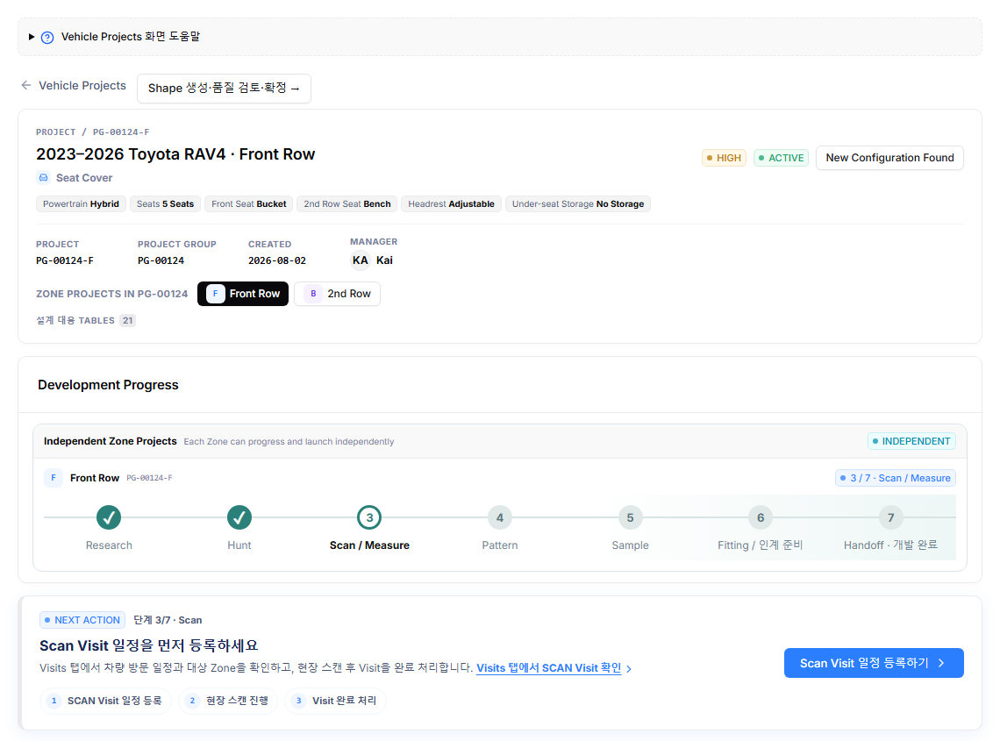
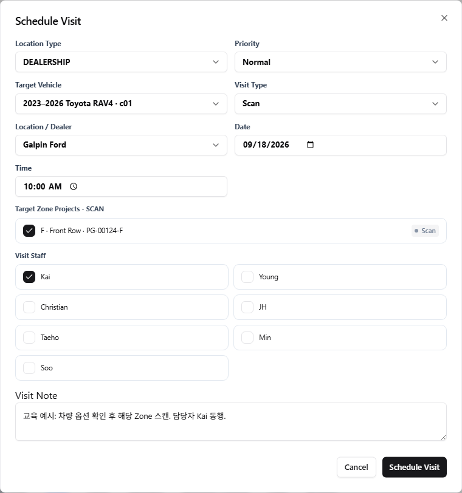
4. Pattern — Link parts and revisions
For Seat Covers, select developed parts to build the zone's composition.
Follow these steps
- Open Parts → Link existing part.
- Select the required part and revision. The long example code is a part identifier.
- Link it to zone F and check the name, quantity, and revision in Parts.
- Link other required parts. Complete Design once the zone composition is ready.
Example inputs
- Name / Part
- FH-AA-BB-46BENMEG-C-P
- Revision
- 1 (training example)
- Owner / Note
- JH / Initial pattern or mold
- DXF example
- sc-guide-r1.dxf — Training placeholder
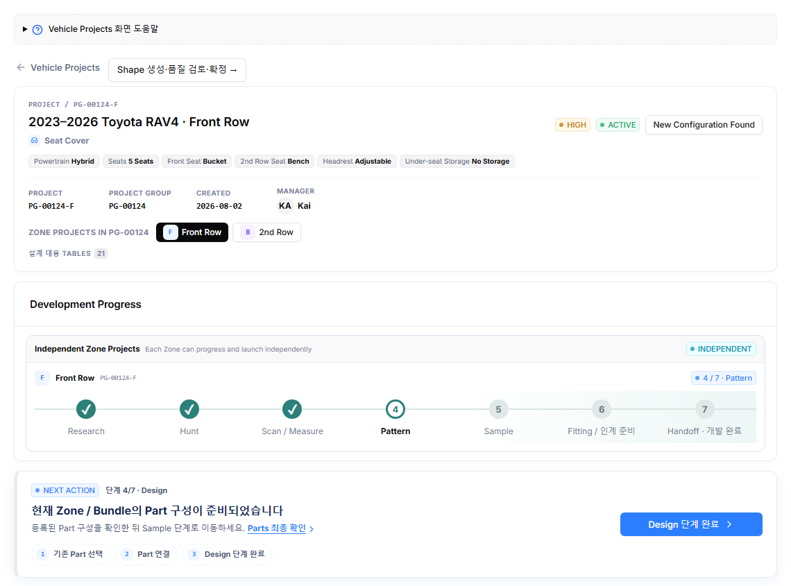
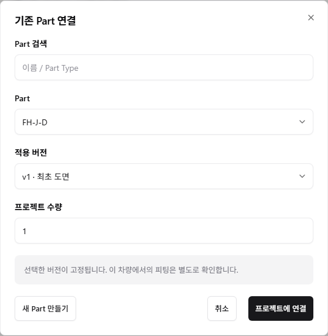
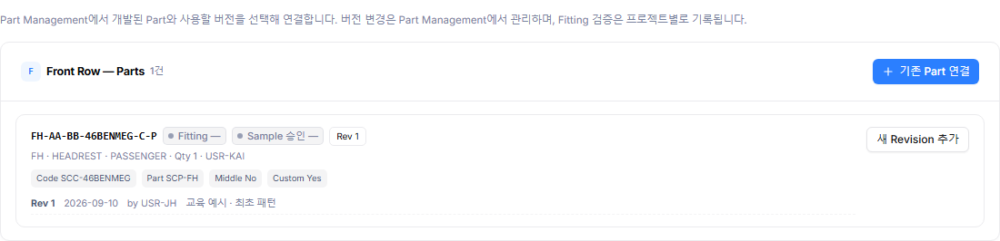
5. Sample — Request, receive, and inspect
Requested, shipped, and inspection-passed samples have distinct statuses.
Follow these steps
- Open Samples → Sample Request. Check the factory, parts, and current revisions.
- Save the request and record dispatch details using actual tracking numbers and dates.
- Record receipt on arrival. In Sample Tracker, open the request row or Receipt & inspection.
- Save drawing match, change implementation, and reasons for each item. See the shared detailed exercise below.
- Return to project Samples and check request/current-revision approvals and missing items. Complete Sample only when all requirements are met.
Example inputs
- Factory
- Tianhong — Training example
- Request example
- SR-GUIDE-SC
- Target
- FH-AA-BB-46BENMEG-C-P / Rev 1 / Round 1
- Inspection example
- Drawing match = Matches / Change implementation not applicable for first round
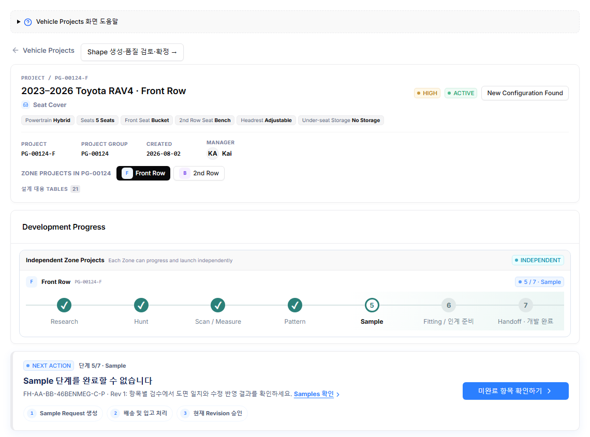
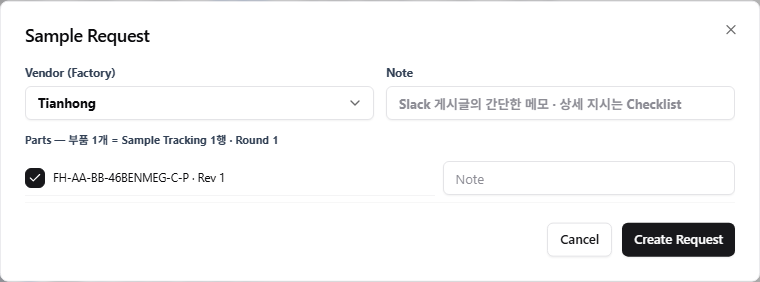
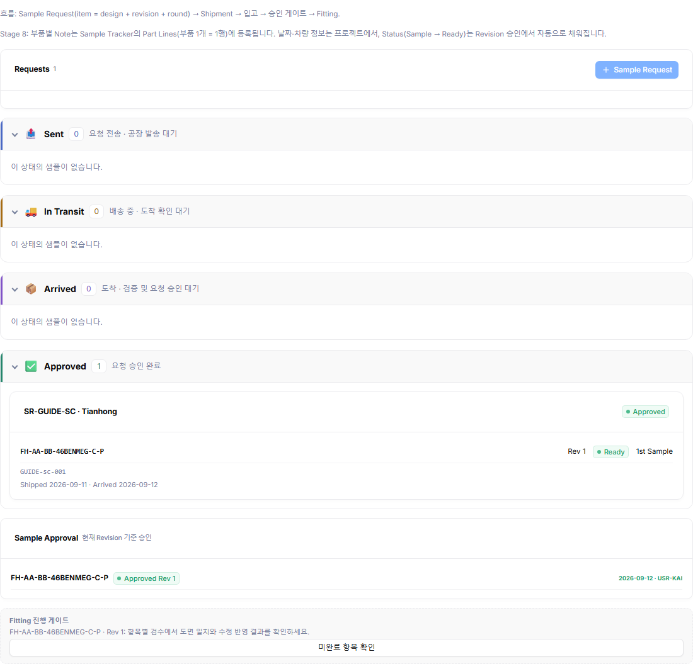
6. Fitting — Test on the actual vehicle
A sample matching the drawing still needs a separate test on the actual vehicle.
Follow these steps
- Resolve incomplete Sample requirements first.
- In Visits → Schedule Visit, select Fitting. Verify vehicle, date, zones, and staff.
- Install the sample and check interference, fastening, lifting, and gaps. Record photos and results.
- Complete the visit with PASS or FAIL based on actual results.
- If FAIL, return to Pattern/Design and repeat: Revised version → New sample → Reinspection → Refitting.
Example inputs
- Visit Type
- FITTING
- Inspection target
- 2023–2026 Toyota RAV4 / F
- Example result
- PASS — Prepared training result
- Example failure reason
- Lower backrest lifting
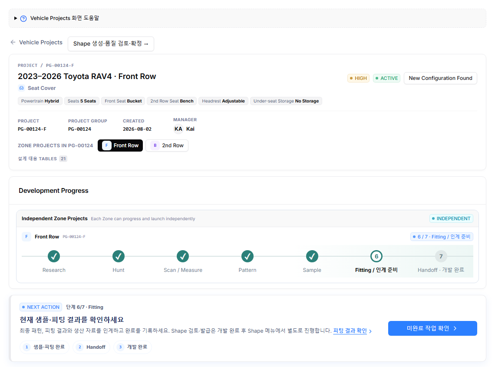
7. Handoff — Deliver materials to production
The final step organizes materials so production can continue with another owner.
Follow these steps
- When sample/fitting conditions are satisfied, open Record handoff completion in Overview. Legacy completed data may show Record handoff verification.
- Record locations for the final parts list, blueprint, fitting photos/videos, product photos, manual, and design files.
- Check only materials you have opened and reviewed. Also verify vehicle, options, zone, and project number.
- Select the handoff approver and confirm actual delivery and approval before checking the box.
- Save Handoff complete / Development complete only when errors are resolved and requirements met. The warning example below is not a completed handoff.
Example inputs
- Example document path
- TRAINING/SC/parts.pdf
- Blueprint
- TRAINING/SC/blueprint.pdf
- Other materials
- fitting-photos / product-photos / manual.pdf / pattern-r1.dxf
- Example approver
- Kai — Actual approval must be verified
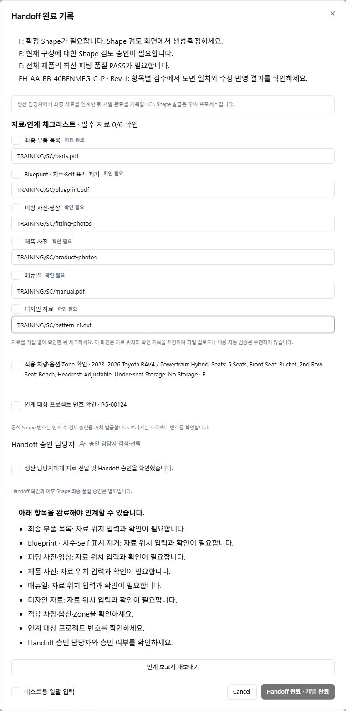
1. Research — Recheck the development target
Recheck the vehicle and options before starting product development.
Follow these steps
- Open the vehicle's F zone in Vehicle Projects.
- Check the vehicle, model years, options, and assignee at the top.
- If Research is current, click Complete Research.
- If already checked, continue to step 2 without entering it again.
Example inputs
- Example vehicle
- 2025 Toyota Camry
- Product
- Floor Mat
- Working zone
- F
- Assignee
- Kai
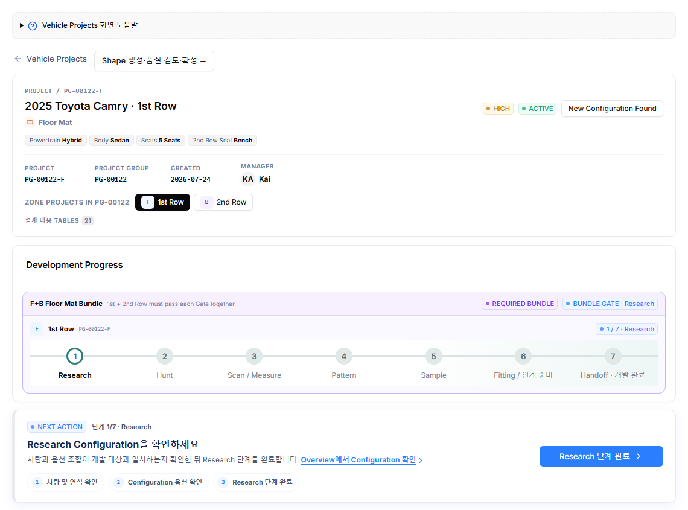
2. Hunt — Secure the vehicle
Secure the actual vehicle and a visit appointment for scanning.
Follow these steps
- Confirm model year and seat/floor specifications with the dealer or partner.
- Check vehicle availability and visits in Hunt Board.
- Return to project Overview and identify the vehicle source.
- Once secured, complete Vehicle Hunt. Schedule the visit in the next Scan stage.
Example inputs
- Vehicle source example
- Galpin Ford — Training location example
- Check
- Model year and options / Availability / Contact
- Planned visit
- 2026-09-18 10:00
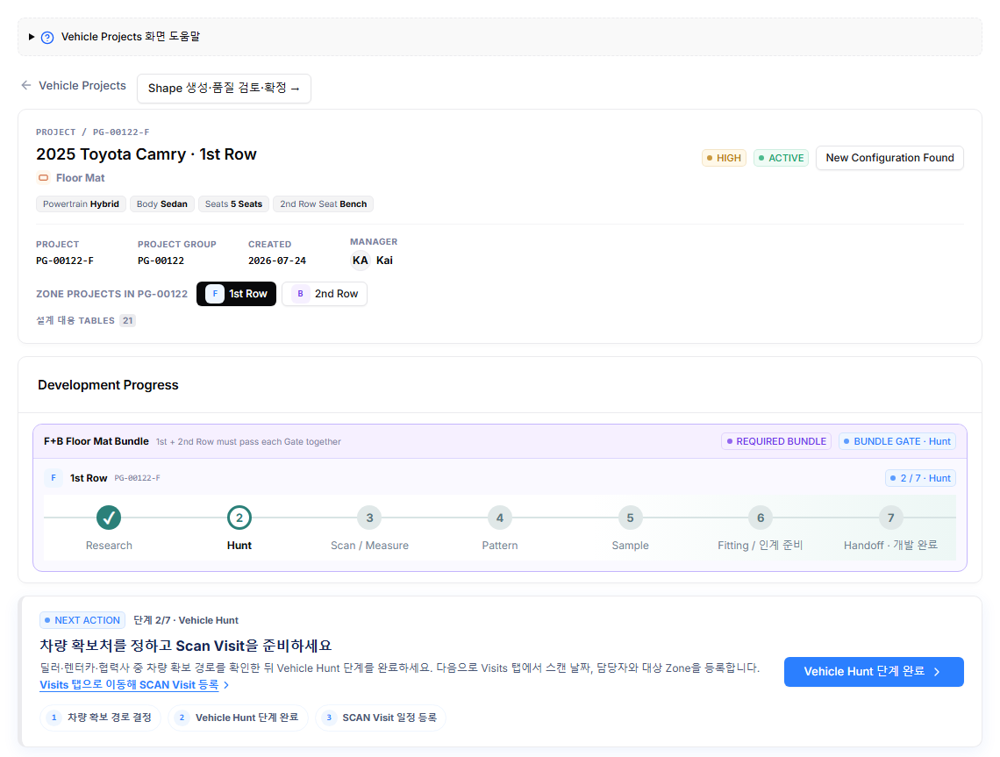
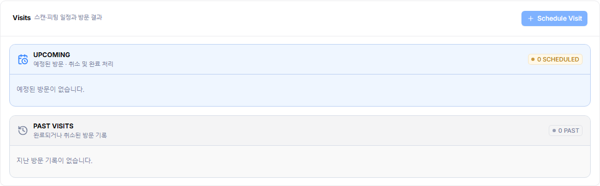
3. Scan / Measure — Measure the vehicle and record results
Capture actual geometry. Scheduling a visit and completing measurements are different.
Follow these steps
- Open Visits → Schedule Visit and choose Scan.
- Choose date, time, location, target zones, and staff. Include both F and B.
- Save the booking, verify the actual vehicle and options on site, and perform the scan / measurement.
- Record completion with Complete Scan on the visit. Add references to measurement materials in Files.
- Review target zone completion in Overview, then complete Scan.
Example inputs
- Visit Type
- SCAN
- Date / Time
- 2026-09-18 / 10:00
- Target
- F + B
- Visit Note
- Verify vehicle options and scan the zone. Kai accompanies the visit.
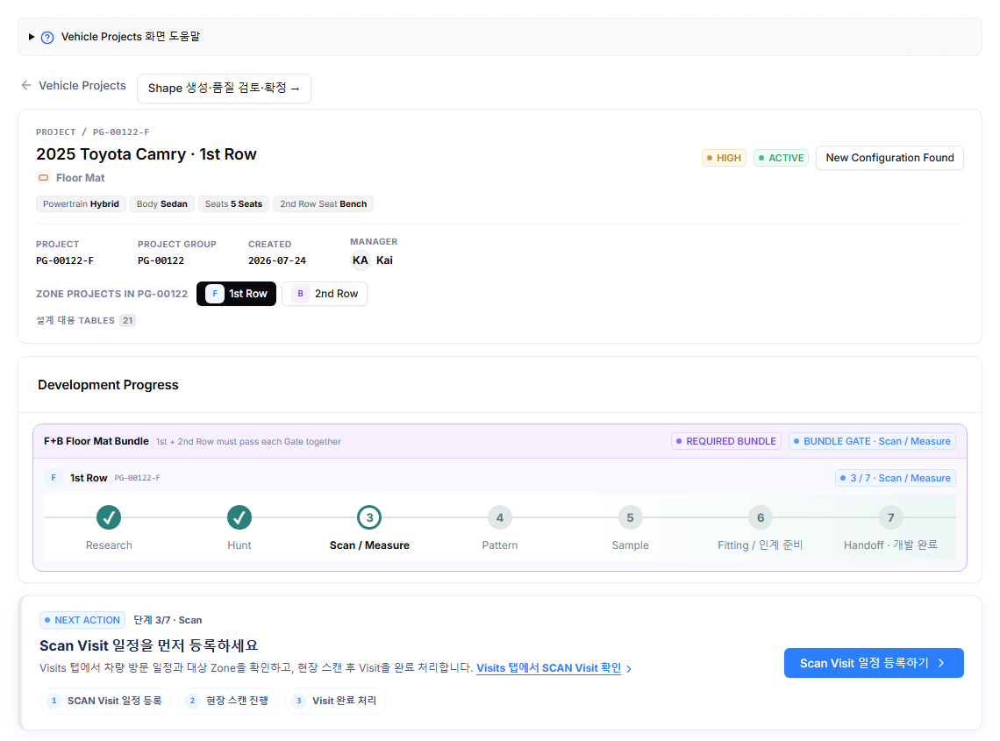
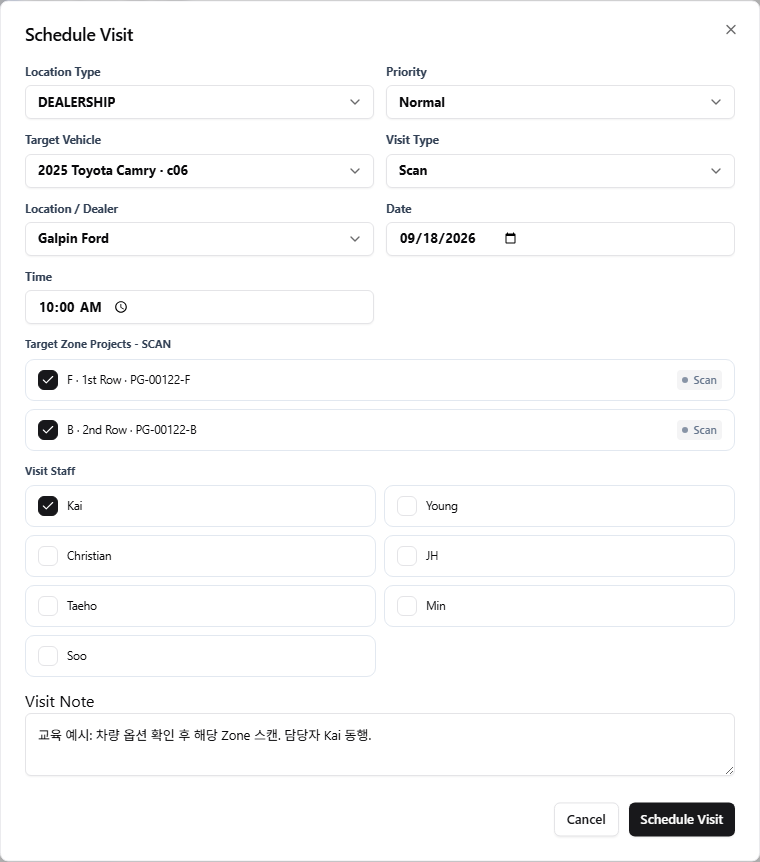
4. Pattern — Register front and rear molds
Front and rear floors use separate zone molds. Register both.
Follow these steps
- Open Zone molds → Register zone mold.
- Enter name, owner, revision note, and the actual initial DXF.
- Save the F mold, then register the B mold in zone B.
- When ready, complete Design in Overview. Record changes as revisions of the existing design, not duplicate designs.
Example inputs
- Name / Part
- CAMRY-F-GUIDE / CAMRY-B-GUIDE
- Revision
- 1 (training example)
- Owner / Note
- JH / Initial pattern or mold
- DXF example
- fm-guide-r1.dxf — Training placeholder
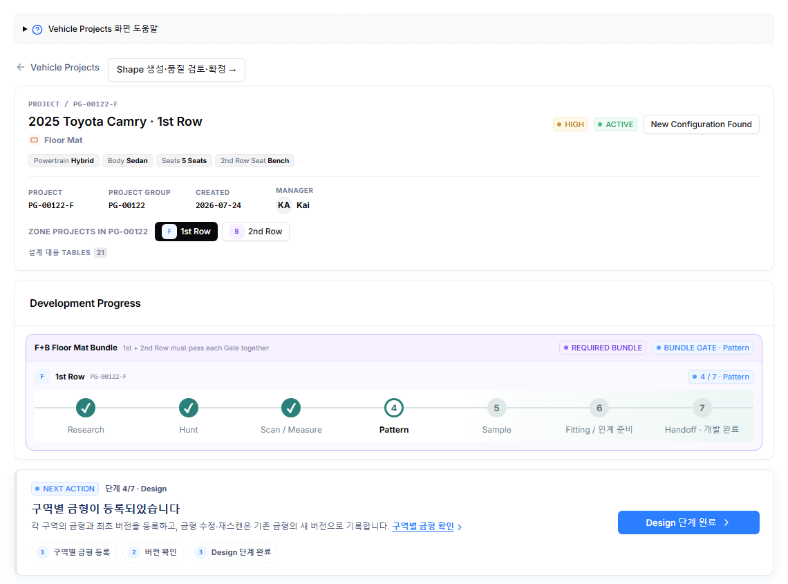
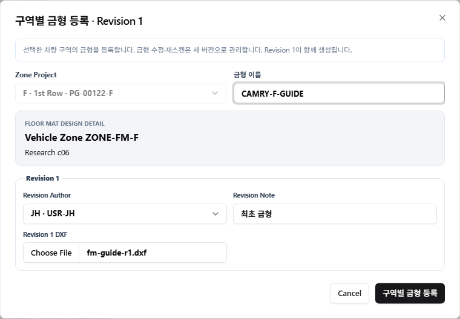
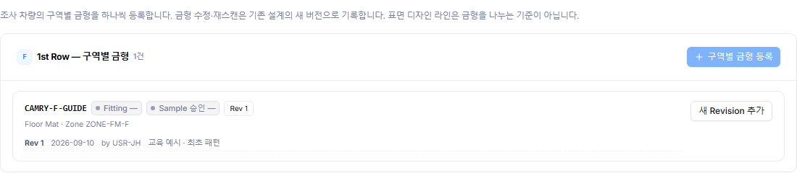
5. Sample — Request, receive, and inspect
Requested, shipped, and inspection-passed samples have distinct statuses.
Follow these steps
- Open Samples → Sample Request. Check the factory, included molds, and current revisions.
- Save the request and record dispatch details using actual tracking numbers and dates.
- Record receipt on arrival. In Sample Tracker, open the request row or Receipt & inspection.
- Save drawing match, change implementation, and reasons for each item. See the shared detailed exercise below.
- Return to project Samples and check request/current-revision approvals and missing items. Complete Sample only when all requirements are met.
Example inputs
- Factory
- Tianhong — Training example
- Request example
- SR-GUIDE-FM
- Target
- CAMRY-F-GUIDE / CAMRY-B-GUIDE / Rev 1 / Round 1
- Inspection example
- Drawing match = Matches / Change implementation not applicable for first round
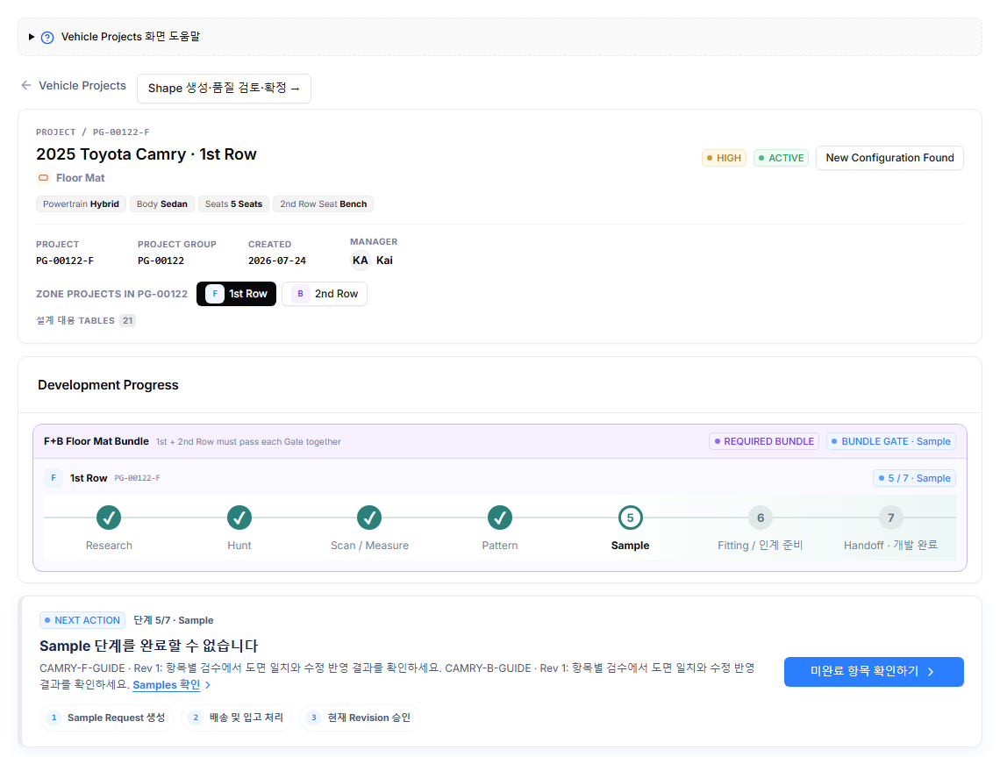
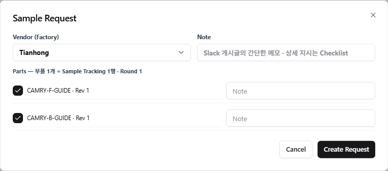
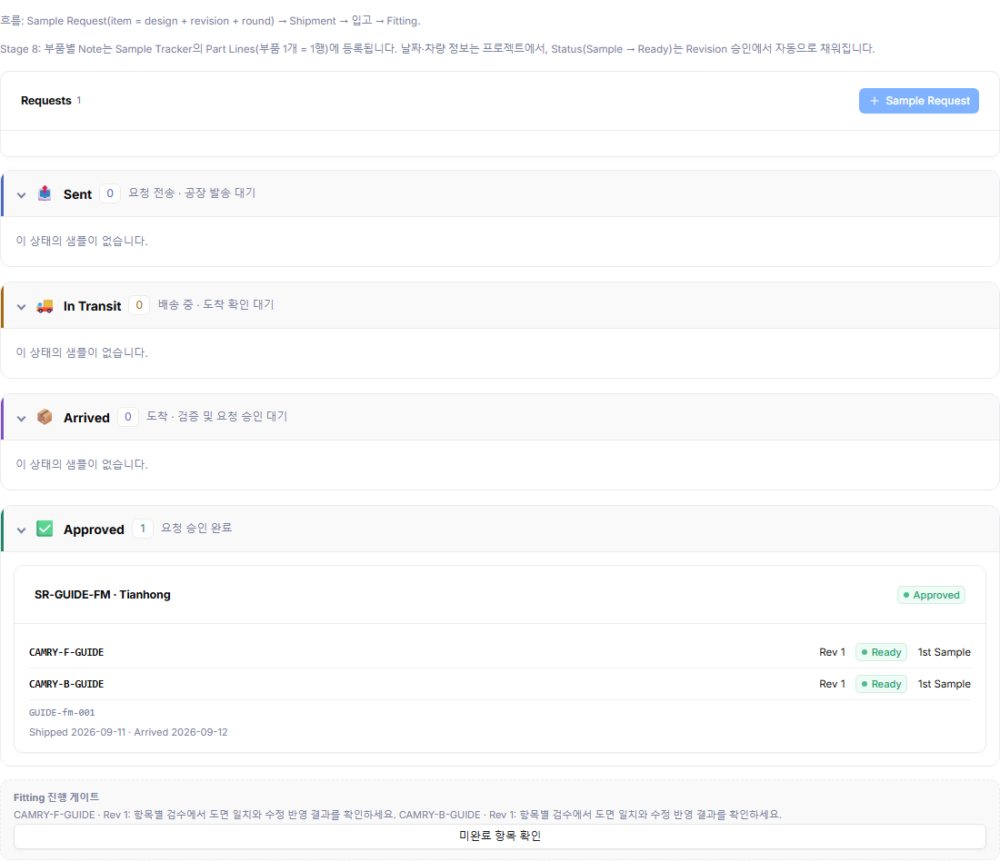
6. Fitting — Test on the actual vehicle
A sample matching the drawing still needs a separate test on the actual vehicle.
Follow these steps
- Resolve incomplete Sample requirements first.
- In Visits → Schedule Visit, select Fitting. Verify vehicle, date, zones, and staff.
- Install the sample and check interference, fastening, lifting, and gaps. Record photos and results.
- Complete the visit with PASS or FAIL based on actual results.
- If FAIL, return to Pattern/Design and repeat: Revised version → New sample → Reinspection → Refitting.
Example inputs
- Visit Type
- FITTING
- Inspection target
- 2025 Toyota Camry / F + B
- Example result
- PASS — Prepared training result
- Example failure reason
- Driver-side fixing point mismatch
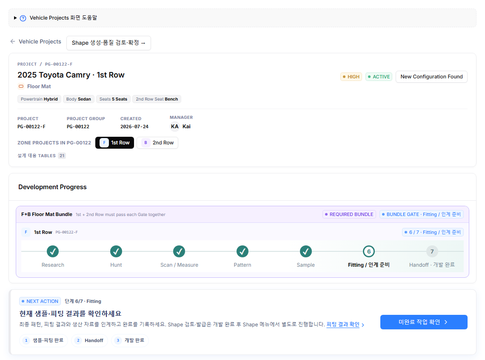
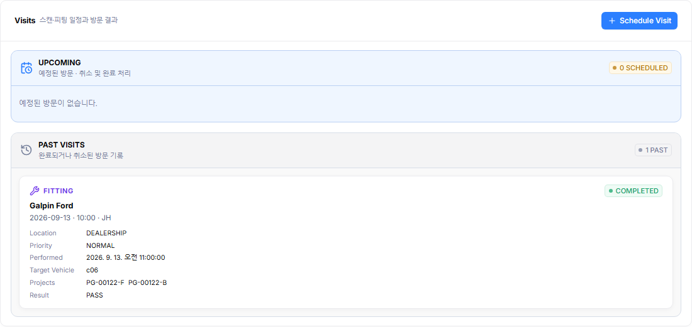
7. Handoff — Deliver materials to production
The final step organizes materials so production can continue with another owner.
Follow these steps
- When sample/fitting conditions are satisfied, open Record handoff completion in Overview. Legacy completed data may show Record handoff verification.
- Record locations for the final parts list, blueprint, fitting photos/videos, product photos, manual, and design files.
- Check only materials you have opened and reviewed. Also verify vehicle, options, zone, and project number.
- Select the handoff approver and confirm actual delivery and approval before checking the box.
- Save Handoff complete / Development complete only when errors are resolved and requirements met. The warning example below is not a completed handoff.
Example inputs
- Example document path
- TRAINING/FM/parts.pdf
- Blueprint
- TRAINING/FM/blueprint.pdf
- Other materials
- fitting-photos / product-photos / manual.pdf / pattern-r1.dxf
- Example approver
- Kai — Actual approval must be verified
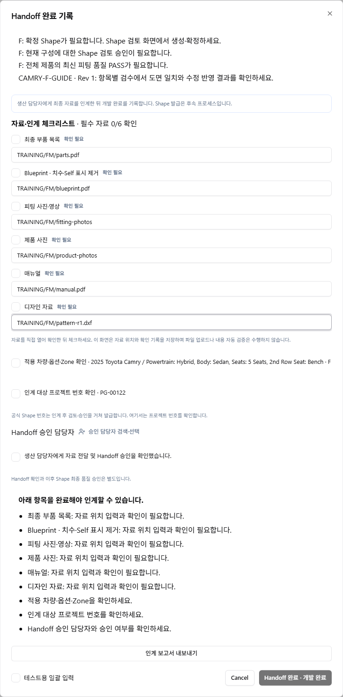
1. Research — Recheck the development target
Recheck the vehicle and options before starting product development.
Follow these steps
- Open the vehicle's EX zone in Vehicle Projects.
- Check the vehicle, model years, options, and assignee at the top.
- If Research is current, click Complete Research.
- If already checked, continue to step 2 without entering it again.
Example inputs
- Example vehicle
- 2024 Ford Mustang
- Product
- Car Cover
- Working zone
- EX
- Assignee
- Kai
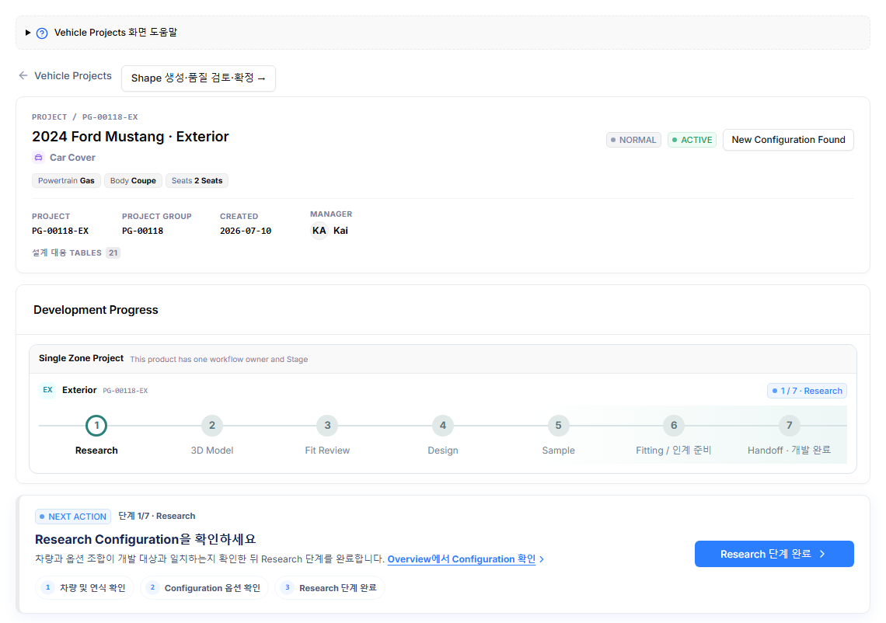
2. 3D Model — Obtain vehicle 3D data
Car Cover needs the complete exterior geometry. This flow uses an acquired 3D model.
Follow these steps
- Obtain the correct model year, body, and exterior specification. Verify usage rights separately.
- Open project Files → Add File Reference.
- Enter the file name and choose 3D MODEL as the asset type.
- Save the reference, then complete 3D Model in Overview.
Example inputs
- File Name
- Mustang-2024-guide.obj
- Asset Type
- 3D MODEL
- Scope
- Group shared
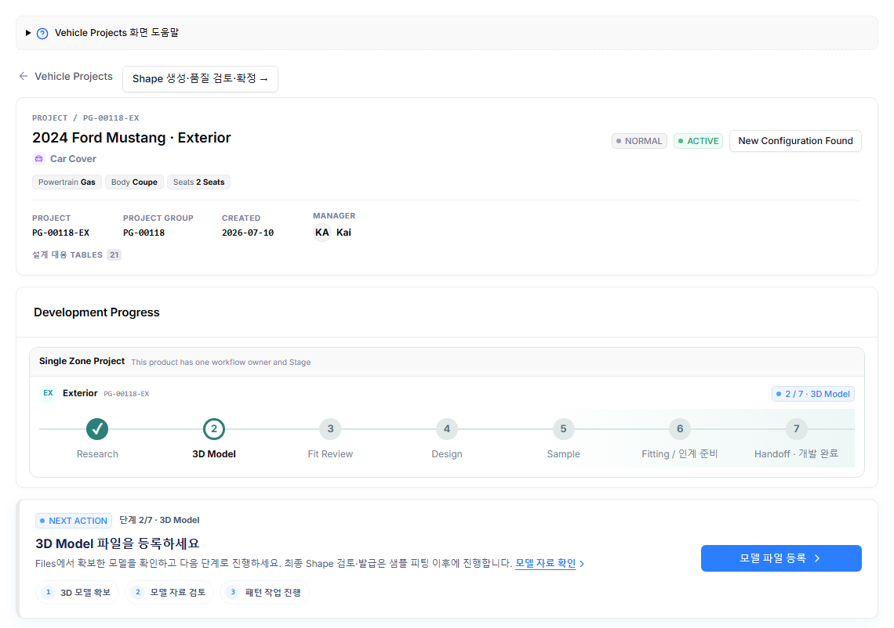
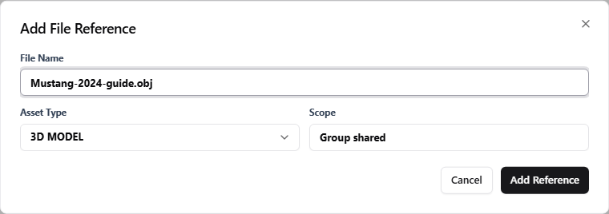
3. Fit Review — Verify model suitability
This is not sample fitting on the actual vehicle. Review model data before making patterns.
Follow these steps
- Check the previous 3D MODEL reference in Files.
- Use an actual model viewer or work tool to check body, bumper, mirrors, and target specifications.
- Replace incorrect model data and review again.
- After review, choose Complete model review / Go to Design in Overview.
Example inputs
- Model to review
- Mustang-2024-guide.obj
- Vehicle
- 2024 Ford Mustang / Coupe
- Review example
- Model year, exterior, mirrors, and body geometry match
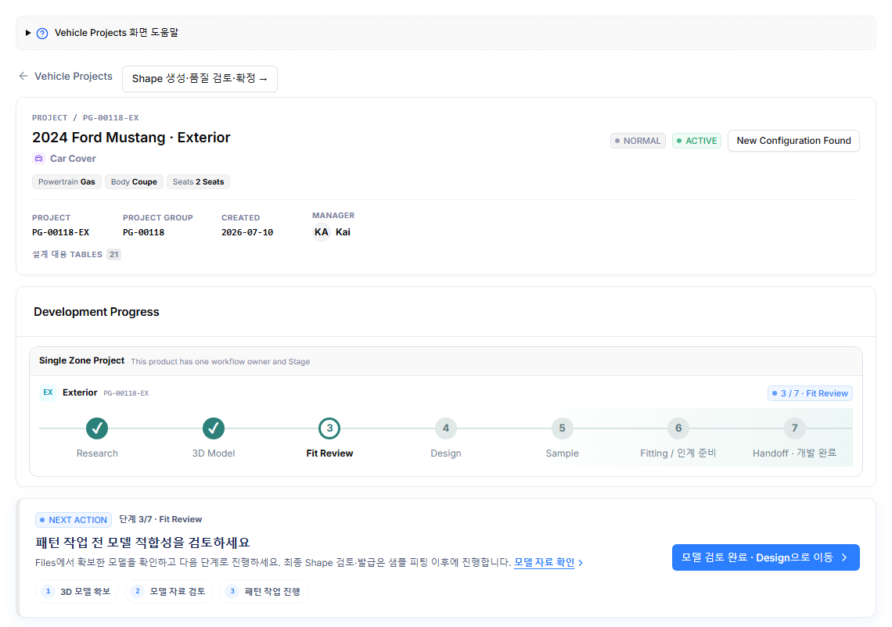
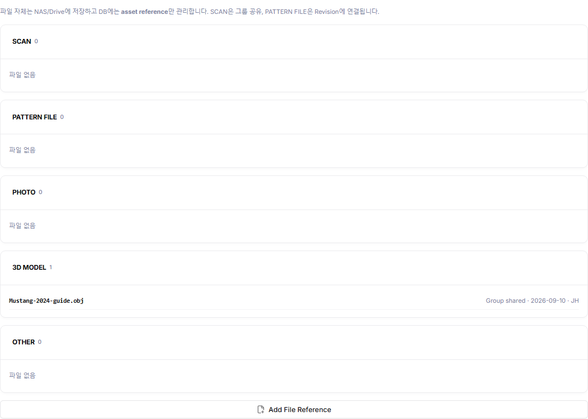
4. Design — Create the full vehicle pattern
Register one complete vehicle-cover pattern and its initial revision.
Follow these steps
- Open Full pattern → Register full pattern.
- Enter name, owner, revision note, and the actual initial DXF.
- Save the full pattern and verify Revision 1 exists.
- When ready, complete Design in Overview. Record changes as revisions of the existing design, not duplicate designs.
Example inputs
- Name / Part
- MUSTANG-EX-GUIDE
- Revision
- 1 (training example)
- Owner / Note
- JH / Initial pattern or mold
- DXF example
- cc-guide-r1.dxf — Training placeholder
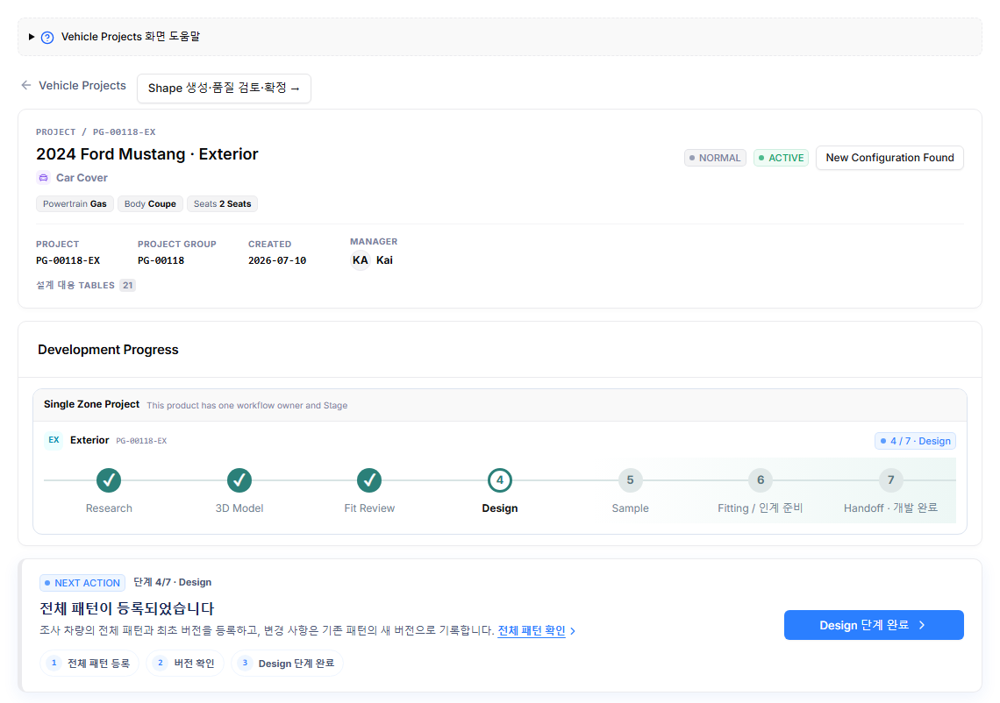
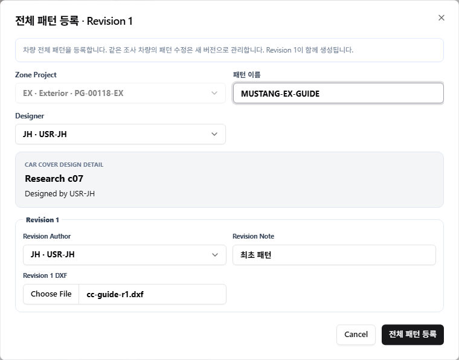
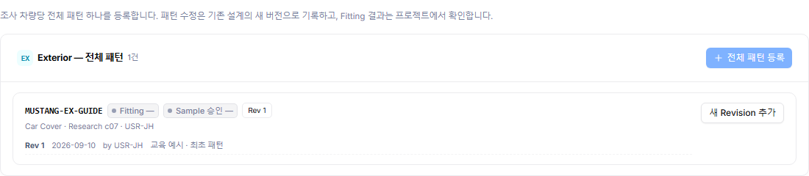
5. Sample — Request, receive, and inspect
Requested, shipped, and inspection-passed samples have distinct statuses.
Follow these steps
- Open Samples → Sample Request. Check the factory, full pattern, and current revision.
- Save the request and record dispatch details using actual tracking numbers and dates.
- Record receipt on arrival. In Sample Tracker, open the request row or Receipt & inspection.
- Save drawing match, change implementation, and reasons for each item. See the shared detailed exercise below.
- Return to project Samples and check request/current-revision approvals and missing items. Complete Sample only when all requirements are met.
Example inputs
- Factory
- Tianhong — Training example
- Request example
- SR-GUIDE-CC
- Target
- MUSTANG-EX-GUIDE / Rev 1 / Round 1
- Inspection example
- Drawing match = Matches / Change implementation not applicable for first round
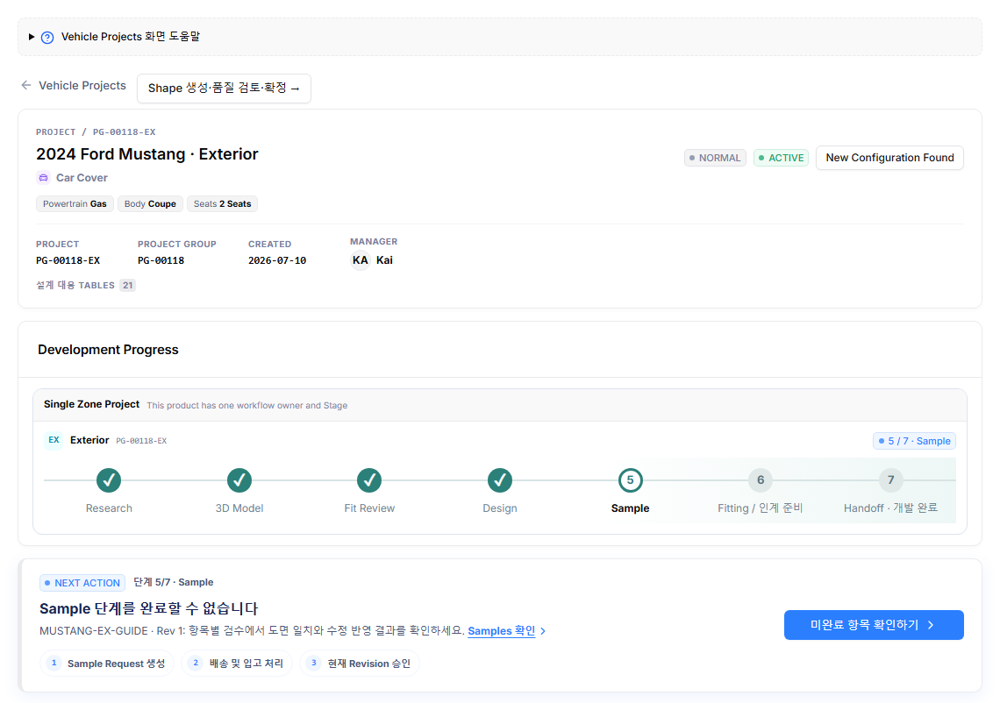
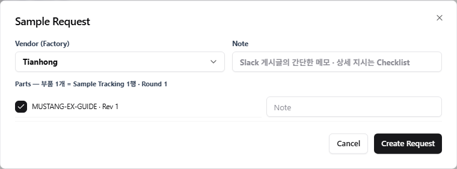
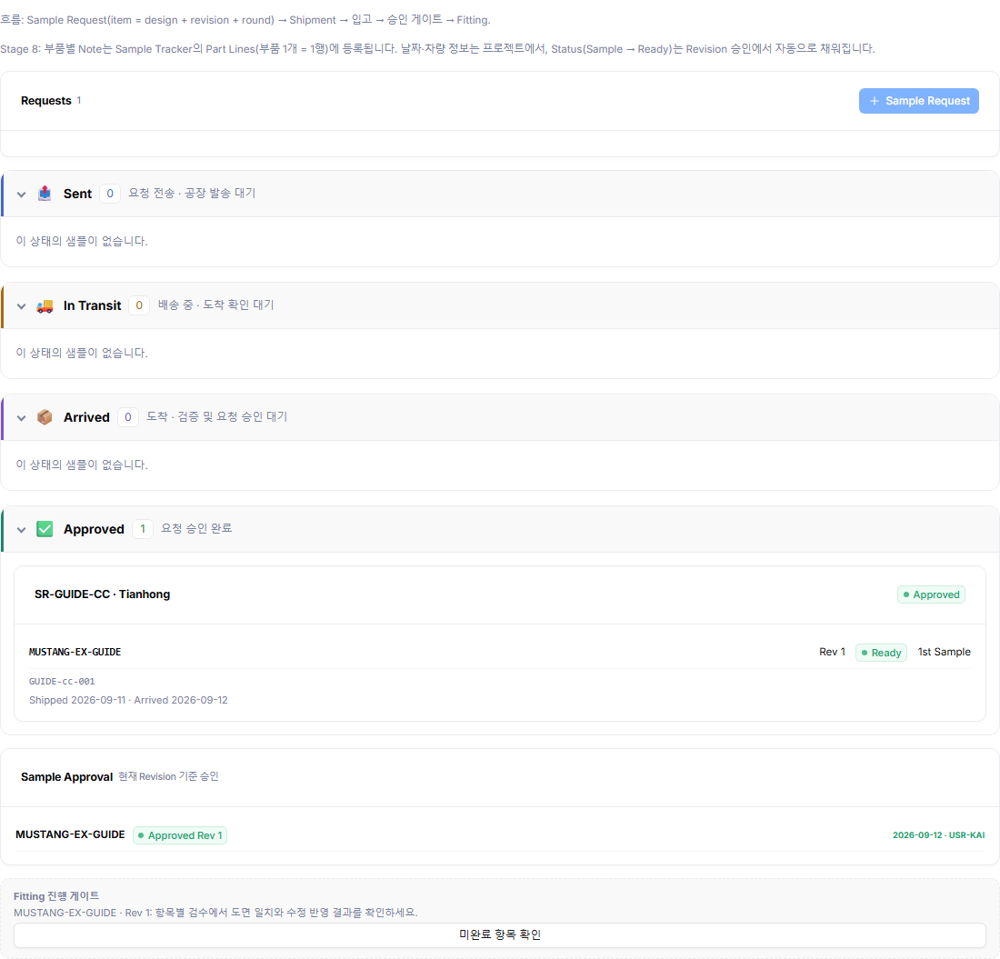
6. Fitting — Test on the actual vehicle
A sample matching the drawing still needs a separate test on the actual vehicle.
Follow these steps
- Resolve incomplete Sample requirements first.
- In Visits → Schedule Visit, select Fitting. Verify vehicle, date, zones, and staff.
- Install the sample and check interference, fastening, lifting, and gaps. Record photos and results.
- Complete the visit with PASS or FAIL based on actual results.
- If FAIL, return to Pattern/Design and repeat: Revised version → New sample → Reinspection → Refitting.
Example inputs
- Visit Type
- FITTING
- Inspection target
- 2024 Ford Mustang / EX
- Example result
- PASS — Prepared training result
- Example failure reason
- Tension around mirrors
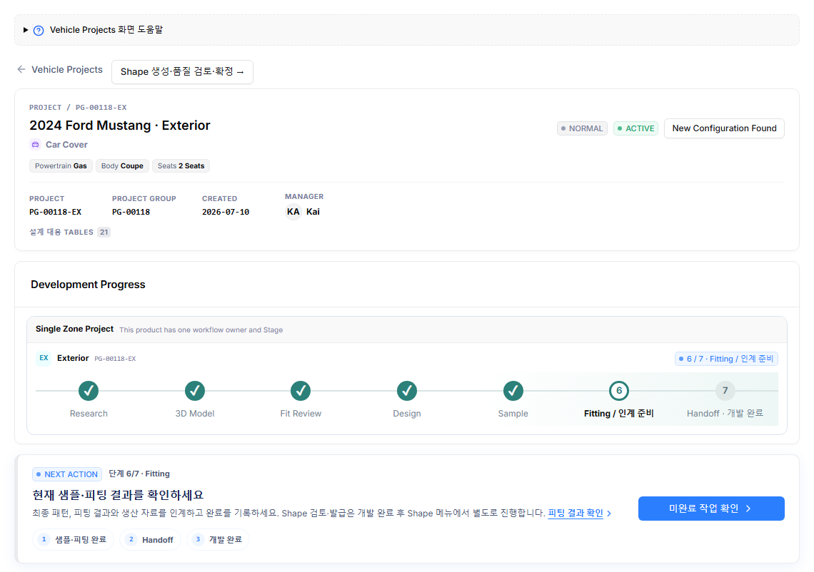
7. Handoff — Deliver materials to production
The final step organizes materials so production can continue with another owner.
Follow these steps
- When sample/fitting conditions are satisfied, open Record handoff completion in Overview. Legacy completed data may show Record handoff verification.
- Record locations for the final parts list, blueprint, fitting photos/videos, product photos, manual, and design files.
- Check only materials you have opened and reviewed. Also verify vehicle, options, zone, and project number.
- Select the handoff approver and confirm actual delivery and approval before checking the box.
- Save Handoff complete / Development complete only when errors are resolved and requirements met. The warning example below is not a completed handoff.
Example inputs
- Example document path
- TRAINING/CC/parts.pdf
- Blueprint
- TRAINING/CC/blueprint.pdf
- Other materials
- fitting-photos / product-photos / manual.pdf / pattern-r1.dxf
- Example approver
- Kai — Actual approval must be verified
Read the sample inspection dialog
The list shows summaries; detailed inspection is in each request's dialog.
- Open Sample Tracker and search forSR-GUIDE-SC. This ID belongs to the guide's example browser; use your own request number in actual work.
- Open the request row orReceipt & inspectionto open the dialog. Select the part first if the request contains multiple items.
- If not received, verify actual arrival and confirm item receipt. Items not shipped cannot be marked received.
- If the sample matches the drawing, chooseDrawing match → Matches. Otherwise chooseMismatch · Factory issueand enter a specific reason.
- Implementation may be blank for round 1. For round 2 onward, choose Fully implemented, Partially implemented, or Not implemented based on actual results. Explain failures.
- Save inspection→ Close. Check inspected counts and pass/issue summaries in the grid.
- This does not assess actual vehicle fitment; check it separately in Fitting.
Troubleshooting: Input issue or application issue?
| Situation | First action |
|---|---|
| Unverified options on a new vehicle | These are registration defaults. Verify the actual vehicle and register the correct configuration separately. |
| Added options do not appear in Research | Check product type. The current Research picker uses the Seat Cover dictionary. Do not recreate another product's keys as Seat Cover keys just to bypass this. |
| New combination immediately COMPLETE / Unfinished research visible in wizard | The UI does not enforce evidence everywhere. The owner must verify actual research completion. |
| Visit or pattern creation locked | Check earlier stages for the current zone. Floor Mat F+B must both pass the same gate. |
| Second sample request locked | Check for a new revision with a completed change request. This is not an unrestricted repeat-request action. |
| Inspection becomes incomplete again after opening the project | This was a reproduced synchronization issue in the archived walkthrough. Drawing match, timestamp, inspector, and notes must be preserved. Report the problem instead of repeated input or forced completion. |
| Fitting FAIL | Return to revised version → New sample request → Receipt, inspection, approval → Refitting for the zone/bundle. Preserve the failure history. |
| Handoff dialog requires a confirmed Shape first | The archived guidance and save validation used different sequences. Reconcile the intended handoff/Shape flow with validation requirements before proceeding. This guide explicitly records that limitation. |
| Entering a path did not deliver the file | Files and Handoff record reference locations. Verify actual storage, delivery, and access permissions separately. |
Final checks before claiming completion
- Correct vehicle, model years, options, product, and zone?
- Actual parts/pattern and latest revisions match?
- Item inspections, required approvals, and latest actual fitting results all satisfied?
- All six document types exist and are accessible to the next owner?
- Actual handoff and approval verified, with a completed record and no errors?